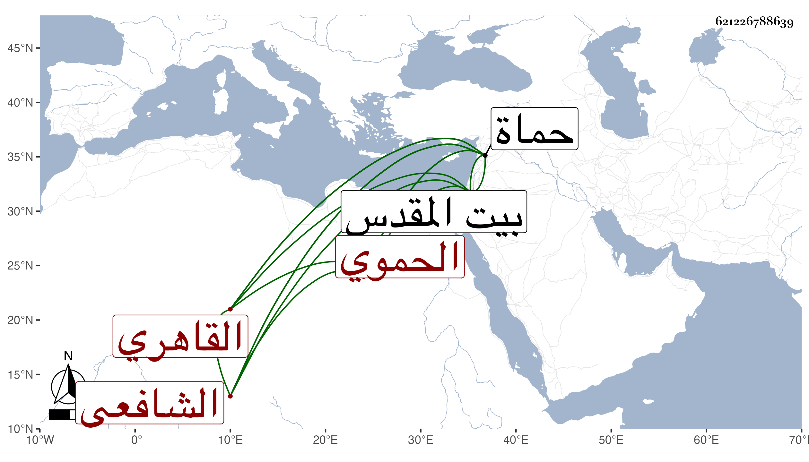

0902Sakhawi.DawLamic.ITO20230111-ara1.EIS1600.621226788639
Biography ID: 621226788639
814
عبد الكافي بن عبد القادر بن الشهاب أحمد بن أبي بكر بن أحمد بن علي التقي الحموي الأصل القاهري الشافعي سبط العلم البلقيني الماضي أبوه وجده ويعرف بابن الرسام . نشأ في كنف أبيه فحفظ القرآن وغيره واشتغل عند الزين زكريا والجوجري والبكري وغيرهم كزوج أمه أبي السعادات بل حضر عنده جده والفخر المقسي ولازمه في التقاسيم والسنهوري في أصوله ، وتميز بحيث ناب في القضاء قانعا باسمه واستقر في تدريس الفقه بجامع أصلم بعد ابن النقاش وتنزل في غيره من الجهات وأثرى ونمت جهاته التي بعضها من قبل آبائه وبعضها بتحصيله . وحج وجاور مع أمه وسافر إلى حماة لتعلقاته بها وزار بيت المقدس في توجهه فلم ينفصل عنه إلا وهو محموم واستمر كذلك حتى مات بحماة في أثناء رمضان سنة أربع وثمانين ودفن بمقبرتهم هناك ولم يكمل الأربعين وتزايد توجع أمه لفقده وترك ولدا من ابنة لعبد الرحيم بن الزين عبد الرحمن بن الجيعان وآخر من غيرها عوضه الله الجنة فقد كان متوددا مع مشاركة ، ولم يلبث أن مات بنوه في طاعون سنة سبع وتسعين .
